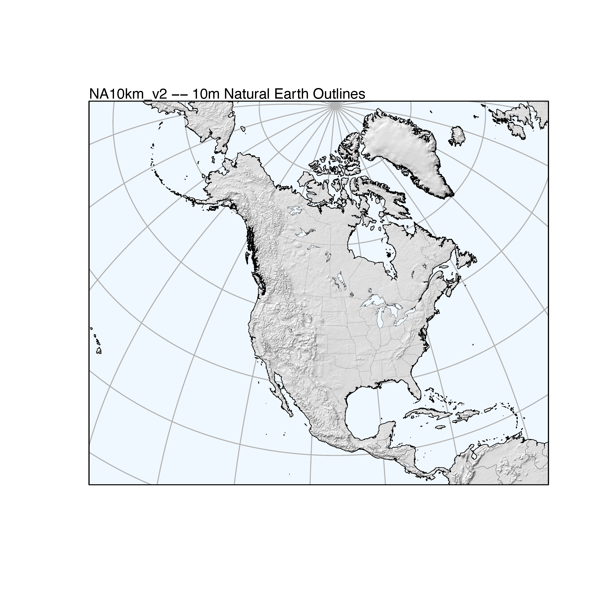

Maps in R
1 Introduction
R has the ability through the maps package and the base graphics to generate maps, but such “out-of-the-box” maps, like other base graphics-generated illustrations, these may not be suitable for immediate publication. Other options exit, for example, using packages like ggmaps, mapview, or mapmate. However, the ability of the sp and rgdal packages to handle the diverse kinds of spatial data, including shapefiles, provides a facility for creating publishable maps. The examples here use a set of shapefiles downloaded from the Natural Earth web page [http://www.naturalearthdata.com].
This first example recreates Figure 1 from Marlon, J.R., et al., 2016, Reconstructions of biomass burning from sediment-charcoal records to improve data–model comparisons. Biogeosciences 13:3225-3244. [http://www.biogeosciences.net/13/3225/2016/]. There are two general steps in the production of this map, the first involves 1) projecting the Natural Earth shapefiles into the Robinson projection (which are reusable for other applications), and the second the projection of the data and assembly into the finished map.
2 Set up outlines and polygons for global (Robinson projection) maps
2.1 Read Natural Earth shapefiles
The first step is to read a set of shapefiles downloaded from the Natural Earth web page [http://www.naturalearthdata.com], and project these into the Robinson projection. Two CRAN packages, rnaturalearth and rnaturalearthdata can be used to manage and download the data within R, but the Natural Earth web pages are worth looking at.
Begin by loading the appropriate packages:
library(sp)
library(rgdal)
library(rgeos)
library(raster)
library(rasterVis)
library(classInt)
library(RColorBrewer)Now read the shape files, including those for global coastlines, adminstrative units (borders), large lakes, and a graticule. Set the filenames:
# Natural Earth shape files -- global (Robinson) projections
# get shapefiles from http://www.naturalearthdata.com
shape_path <- "/Users/bartlein/Projects/ESSD/data/RMaps/source/"
coast_shapefile <- paste(shape_path, "ne_50m_coastline/ne_50m_coastline.shp", sep="")
ocean_shapefile <- paste(shape_path, "ne_50m_ocean/ne_50m_ocean.shp", sep="")
admin0_shapefile <- paste(shape_path, "ne_50m_admin_0_countries/ne_50m_admin_0_countries.shp", sep="")
admin1_shapefile <- paste(shape_path, "ne_50m_admin_1_states_provinces_lakes/ne_50m_admin_1_states_provinces_lakes.shp", sep="")
lakes_shapefile <- paste(shape_path, "ne_50m_lakes/ne_50m_lakes.shp", sep="")
bb_shapefile <- paste(shape_path, "ne_50m_graticules_all/ne_50m_wgs84_bounding_box.shp", sep="")
grat30_shapefile <- paste(shape_path, "ne_50m_graticules_all/ne_50m_graticules_30.shp", sep="")Before reading each file, determine what kind it is (e.g. lines vs. polygons), then read and plot it. Using the ogrInfo() and readOGR functions from rgdal eliminates the necessity of selecting the appropriate function in maptools. In the ‘plot()’ functions below, use the col argument for lines, bor for polygon border colors.
# find out kind of shapefile (lines vs. polygons)
layer <- ogrListLayers(coast_shapefile)
ogrInfo(coast_shapefile, layer=layer)## Source: "/Users/bartlein/Projects/ESSD/data/RMaps/source/ne_50m_coastline/ne_50m_coastline.shp", layer: "ne_50m_coastline"
## Driver: ESRI Shapefile; number of rows: 1428
## Feature type: wkbLineString with 2 dimensions
## Extent: (-180 -85.19219) - (180 83.59961)
## CRS: +proj=longlat +datum=WGS84 +no_defs
## LDID: 87
## Number of fields: 2
## name type length typeName
## 1 scalerank 12 10 Integer64
## 2 featurecla 4 32 String## OGR data source with driver: ESRI Shapefile
## Source: "/Users/bartlein/Projects/ESSD/data/RMaps/source/ne_50m_coastline/ne_50m_coastline.shp", layer: "ne_50m_coastline"
## with 1428 features
## It has 2 fields
## Integer64 fields read as strings: scalerank## Object of class SpatialLinesDataFrame
## Coordinates:
## min max
## x -180.00000 180.00000
## y -85.19219 83.59961
## Is projected: FALSE
## proj4string :
## [+proj=longlat +datum=WGS84 +no_defs +ellps=WGS84 +towgs84=0,0,0]
## Data attributes:
## scalerank featurecla
## 0:1428 Coastline:1428
Get the Proj4 string for later use>
## [1] "+proj=longlat +datum=WGS84 +no_defs +ellps=WGS84 +towgs84=0,0,0"Read the ocean polygons.
# find out kind of shapefile (lines vs. polygons)
layer <- ogrListLayers(ocean_shapefile)
ogrInfo(ocean_shapefile, layer=layer)## Source: "/Users/bartlein/Projects/ESSD/data/RMaps/source/ne_50m_ocean/ne_50m_ocean.shp", layer: "ne_50m_ocean"
## Driver: ESRI Shapefile; number of rows: 1
## Feature type: wkbPolygon with 2 dimensions
## Extent: (-180 -85.19219) - (180 90)
## CRS: +proj=longlat +datum=WGS84 +no_defs
## LDID: 87
## Number of fields: 2
## name type length typeName
## 1 scalerank 12 10 Integer64
## 2 featurecla 4 32 String## OGR data source with driver: ESRI Shapefile
## Source: "/Users/bartlein/Projects/ESSD/data/RMaps/source/ne_50m_ocean/ne_50m_ocean.shp", layer: "ne_50m_ocean"
## with 1 features
## It has 2 fields
## Integer64 fields read as strings: scalerank## Object of class SpatialPolygonsDataFrame
## Coordinates:
## min max
## x -180.00000 180
## y -85.19219 90
## Is projected: FALSE
## proj4string :
## [+proj=longlat +datum=WGS84 +no_defs +ellps=WGS84 +towgs84=0,0,0]
## Data attributes:
## scalerank featurecla
## 0:1 Ocean:1
Read the other shape files the same way. (Note that the summary output is suppressed here.)
layer <- ogrListLayers(admin0_shapefile)
ogrInfo(admin0_shapefile, layer=layer)
admin0_poly <- readOGR(admin0_shapefile, layer=layer)
summary(admin0_poly)
layer <- ogrListLayers(admin1_shapefile)
ogrInfo(admin1_shapefile, layer=layer)
admin1_poly <- readOGR(admin1_shapefile, layer=layer)
summary(admin1_poly)
layer <- ogrListLayers(lakes_shapefile)
ogrInfo(lakes_shapefile, layer=layer)
lakes_poly <- readOGR(lakes_shapefile, layer=layer)
summary(lakes_poly)
lrglakes_poly <- lakes_poly[as.numeric(lakes_poly$scalerank) <= 2 ,]
layer <- ogrListLayers(grat30_shapefile)
ogrInfo(grat30_shapefile, layer=layer)
grat30_lines <- readOGR(grat30_shapefile, layer=layer)
summary(grat30_lines)
layer <- ogrListLayers(bb_shapefile)
ogrInfo(bb_shapefile, layer=layer)
bb_poly <- readOGR(bb_shapefile, layer=layer)
summary(bb_poly)
bb_lines <- as(bb_poly, "SpatialLines")Plot everything (except ocean).
# plot everything
plot(coast_lines, col="black")
plot(admin0_poly, bor="gray", add=TRUE)
plot(admin1_poly, bor="pink", add=TRUE)
plot(lakes_poly, bor="lightblue", add=TRUE)
plot(lrglakes_poly, bor="blue", add=TRUE)
plot(grat30_lines, col="lightblue", add=TRUE)
plot(bb_lines, col="black", add=TRUE)
plot(coast_lines, col="purple", add=TRUE)
2.2 Project the shapefiles
Next, transform (project) the individual shapefiles into the Robinson projection using spTransform. Set the proj4 string for the projectdion using the CRS() function.
# set Robinson CRS
unproj_crs <- CRS("+proj=longlat +datum=WGS84 +ellps=WGS84 +towgs84=0,0,0")
unproj_crs## CRS arguments:
## +proj=longlat +datum=WGS84 +ellps=WGS84 +towgs84=0,0,0## CRS arguments: +proj=robin +lon_0=0w +ellps=WGS84Now do the projections.
# do projections
bb_poly_proj <- spTransform(bb_poly, robin_crs)
coast_lines_proj <- spTransform(coast_lines, robin_crs)
admin0_poly_proj <- spTransform(admin0_poly, robin_crs)
admin1_poly_proj <- spTransform(admin1_poly, robin_crs)
lakes_poly_proj <- spTransform(lakes_poly, robin_crs)
grat30_lines_proj <- spTransform(grat30_lines, robin_crs)
lrglakes_poly_proj <- spTransform(lrglakes_poly, robin_crs)Plot the projected shapefiles.
# plot projected files
plot(bb_poly_proj, col="gray95")
plot(admin0_poly_proj, col="white", bor="pink", add=TRUE)
plot(admin1_poly_proj, col="white", bor="pink", add=TRUE)
plot(lakes_poly_proj, bor="lightblue", add=TRUE)
plot(lrglakes_poly_proj, bor="purple", add=TRUE)
plot(coast_lines_proj, col="black", add=TRUE)
plot(grat30_lines_proj, col="lightblue", add=TRUE)
plot(bb_poly_proj, bor="black", add=TRUE)
Because the map we’re creating will use the borders and lakes only as outlines (as opposed to polygons that might be filled with a specific color), those polygons can be converted to SpatialLines objects.
# convert polygons to spatial lines
admin0_lines_proj <- as(admin0_poly_proj, "SpatialLines")
admin1_lines_proj <- as(admin1_poly_proj, "SpatialLines")
lakes_lines_proj <- as(lakes_poly_proj, "SpatialLines")
lrglakes_lines_proj <- as(lrglakes_poly_proj, "SpatialLines")
bb_lines_proj <- as(bb_poly_proj, "SpatialLines")Plot the SpatialLines objects
# test the SpatialLines shapefiles
plot(bb_poly_proj, col="gray95")
plot(coast_lines_proj, col="green", add=TRUE)
plot(admin0_lines_proj, col="lightblue", add=TRUE)
plot(admin1_lines_proj, col="lightblue", add=TRUE)
plot(lakes_lines_proj, col="blue", add=TRUE)
plot(lrglakes_lines_proj, col="purple", add=TRUE)
plot(grat30_lines_proj, col="gray", add=TRUE)
plot(coast_lines_proj, col="black", add=TRUE)
plot(bb_lines_proj, col="black", add=TRUE)
2.3 Write out the projected shapefiles
Next, write out the projected shapefiles, first setting the output path.
# write out the various shapefiles
outpath <- "/Users/bartlein/Projects/ESSD/data/RMaps/derived/glrob_50m/"
outshape <- coast_lines_proj
outfile <- "glRob_50m_coast_lines"
outshapefile <- paste(outpath,outfile,sep="")
spdf <- data.frame(as.numeric(row.names(outshape)))
row.names(spdf) <- row.names(outshape)
outshape <- SpatialLinesDataFrame(outshape, spdf)
writeOGR(outshape, outshapefile, outfile, driver="ESRI Shapefile", overwrite_layer=TRUE)It’s always good practice to test whether the shapefile has ideed been written out correctly. Read it back in and plot it.
## OGR data source with driver: ESRI Shapefile
## Source: "/Users/bartlein/Projects/ESSD/data/RMaps/derived/glRob_50m/glRob_50m_coast_lines", layer: "glRob_50m_coast_lines"
## with 1428 features
## It has 1 fields
Write out the other shapefiles.
outshape <- bb_poly_proj
outfile <- "glRob_50m_bb_poly"
outshapefile <- paste(outpath,outfile,sep="")
spdf <- data.frame(as.numeric(row.names(outshape)))
row.names(spdf) <- row.names(outshape)
outshape <- SpatialPolygonsDataFrame(outshape, spdf)
writeOGR(outshape, outshapefile, outfile, driver="ESRI Shapefile", overwrite_layer=TRUE)
outshape <- bb_lines_proj
outfile <- "glRob_50m_bb_lines"
outshapefile <- paste(outpath,outfile,sep="")
spdf <- data.frame(as.numeric(row.names(outshape)))
row.names(spdf) <- row.names(outshape)
outshape <- SpatialLinesDataFrame(outshape, spdf)
writeOGR(outshape, outshapefile, outfile, driver="ESRI Shapefile", overwrite_layer=TRUE)
outshape <- admin0_poly_proj
outfile <- "glRob_50m_admin0_poly"
outshapefile <- paste(outpath,outfile,sep="")
spdf <- data.frame(as.numeric(row.names(outshape)))
row.names(spdf) <- row.names(outshape)
outshape <- SpatialPolygonsDataFrame(outshape, spdf)
writeOGR(outshape, outshapefile, outfile, driver="ESRI Shapefile", overwrite_layer=TRUE)
outshape <- admin0_lines_proj
outfile <- "glRob_50m_admin0_lines"
outshapefile <- paste(outpath,outfile,sep="")
spdf <- data.frame(as.numeric(row.names(outshape)))
row.names(spdf) <- row.names(outshape)
outshape <- SpatialLinesDataFrame(outshape, spdf)
writeOGR(outshape, outshapefile, outfile, driver="ESRI Shapefile", overwrite_layer=TRUE)
outshape <- admin1_poly_proj
outfile <- "glRob_50m_admin1_poly"
outshapefile <- paste(outpath,outfile,sep="")
spdf <- data.frame(as.numeric(row.names(outshape)))
row.names(spdf) <- row.names(outshape)
outshape <- SpatialPolygonsDataFrame(outshape, spdf)
writeOGR(outshape, outshapefile, outfile, driver="ESRI Shapefile", overwrite_layer=TRUE)
outshape <- admin1_lines_proj
outfile <- "glRob_50m_admin1_lines"
outshapefile <- paste(outpath,outfile,sep="")
spdf <- data.frame(as.numeric(row.names(outshape)))
row.names(spdf) <- row.names(outshape)
outshape <- SpatialLinesDataFrame(outshape, spdf)
writeOGR(outshape, outshapefile, outfile, driver="ESRI Shapefile", overwrite_layer=TRUE)
outshape <- lakes_poly_proj
outfile <- "glRob_50m_lakes_poly"
outshapefile <- paste(outpath,outfile,sep="")
spdf <- data.frame(as.numeric(row.names(outshape)))
row.names(spdf) <- row.names(outshape)
outshape <- SpatialPolygonsDataFrame(outshape, spdf)
writeOGR(outshape, outshapefile, outfile, driver="ESRI Shapefile", overwrite_layer=TRUE)
outshape <- lakes_lines_proj
outfile <- "glRob_50m_lakes_lines"
outshapefile <- paste(outpath,outfile,sep="")
spdf <- data.frame(as.numeric(row.names(outshape)))
row.names(spdf) <- row.names(outshape)
outshape <- SpatialLinesDataFrame(outshape, spdf)
writeOGR(outshape, outshapefile, outfile, driver="ESRI Shapefile", overwrite_layer=TRUE)
outshape <- lrglakes_poly_proj
outfile <- "glRob_50m_lrglakes_poly"
outshapefile <- paste(outpath,outfile,sep="")
spdf <- data.frame(as.numeric(row.names(outshape)))
row.names(spdf) <- row.names(outshape)
outshape <- SpatialPolygonsDataFrame(outshape, spdf)
writeOGR(outshape, outshapefile, outfile, driver="ESRI Shapefile", overwrite_layer=TRUE)
outshape <- lrglakes_lines_proj
outfile <- "glRob_50m_lrglakes_lines"
outshapefile <- paste(outpath,outfile,sep="")
spdf <- data.frame(as.numeric(row.names(outshape)))
row.names(spdf) <- row.names(outshape)
outshape <- SpatialLinesDataFrame(outshape, spdf)
writeOGR(outshape, outshapefile, outfile, driver="ESRI Shapefile", overwrite_layer=TRUE)
outshape <- grat30_lines_proj
outfile <- "glRob_50m_grat30_lines"
outshapefile <- paste(outpath,outfile,sep="")
spdf <- data.frame(as.numeric(row.names(outshape)))
row.names(spdf) <- row.names(outshape)
outshape <- SpatialLinesDataFrame(outshape, spdf)
writeOGR(outshape, outshapefile, outfile, driver="ESRI Shapefile", overwrite_layer=TRUE)2.4 Clip out a polygon for the Caspian
Another setup step, and again one that creates some resuable files, is to make a polygon shape file for the Caspian Sea, which can be plotted and filled with color.
The first step is to creat a “bounding box” that surrouds the Caspian.
caspian_bb <- as(extent(45, 56, 35, 50), "SpatialPolygons")
proj4string(caspian_bb) <- unproj_proj4string
summary(caspian_bb)## Object of class SpatialPolygons
## Coordinates:
## min max
## x 45 56
## y 35 50
## Is projected: FALSE
## proj4string :
## [+proj=longlat +datum=WGS84 +no_defs +ellps=WGS84 +towgs84=0,0,0]# get the points that define the ouline of the Caspian
caspian_poly <- gIntersection(ocean_poly, caspian_bb)
proj4string(caspian_poly) <- unproj_proj4string
summary(caspian_poly)## Object of class SpatialPolygons
## Coordinates:
## min max
## x 46.70723 54.72324
## y 36.61450 47.11016
## Is projected: FALSE
## proj4string :
## [+proj=longlat +datum=WGS84 +no_defs +ellps=WGS84 +towgs84=0,0,0]
Project and plot the Caspian polygon:
caspian_poly_proj <- spTransform(caspian_poly, robin_crs)
plot(bb_poly_proj, bor="black")
plot(coast_lines_proj, col="black", add=TRUE)
plot(caspian_poly_proj, col="red", add=TRUE)
Write out the Caspian polygon.
outshape <- caspian_poly_proj
outfile <- "glRob_50m_caspian_poly"
outshapefile <- paste(outpath,outfile,sep="")
spdf <- data.frame(as.numeric(row.names(outshape)))
row.names(spdf) <- row.names(outshape)
outshape <- SpatialPolygonsDataFrame(outshape, spdf)
writeOGR(outshape, outshapefile, outfile, driver="ESRI Shapefile", overwrite_layer=TRUE)## Warning in writeOGR(outshape, outshapefile, outfile, driver = "ESRI Shapefile", : Field names abbreviated
## for ESRI Shapefile driver3 Set up tree-cover data
One version of Fig. 1 in Marlon et al. (2016) includes a gray-shade “layer” of the “UMD” tree-cover data (Defries et al., 2000, A new global 1-km dataset of percentage tree cover derived from remote sensing, Global Change Biology 6:247-254) [http://glcf.umd.edu/data/treecover/data.shtml], used to provide a background context for the location of the GCDv3 sites. The data were converted to a netCDF file, and this is read, and in turn coverted to spatial points and spatial polygon dataframes.
3.1 Read the tree-cover data
# read a single-variable netCDF dataset using raster()
tree_path <- "/Users/bartlein/Projects/ESSD/data/nc_files/"
tree_name <- "treecov.nc"
tree_file <- paste(tree_path, tree_name, sep="")
tree <- raster(tree_file) # open treecov.nc
tree## class : RasterLayer
## dimensions : 360, 720, 259200 (nrow, ncol, ncell)
## resolution : 0.5, 0.5 (x, y)
## extent : -180, 180, -90, 90 (xmin, xmax, ymin, ymax)
## coord. ref. : +proj=longlat +datum=WGS84 +ellps=WGS84 +towgs84=0,0,0
## data source : /Users/bartlein/Projects/ESSD/data/nc_files/treecov.nc
## names : treecov
## zvar : treecov# levelplot
mapTheme <- rasterTheme(region=brewer.pal(8,"Greens"))
plt <- levelplot(tree, margin=F, par.settings=mapTheme)
plt + layer(sp.lines(coast_lines, col="black", lwd=0.5))
Create a SpatialPoints data frame, and plot it:
## Object of class SpatialPointsDataFrame
## Coordinates:
## min max
## x -179.75 179.75
## y -55.75 83.25
## Is projected: FALSE
## proj4string :
## [+proj=longlat +datum=WGS84 +ellps=WGS84 +towgs84=0,0,0]
## Number of points: 60480
## Data attributes:
## treecov
## Min. :-2.00
## 1st Qu.:-1.00
## Median :-1.00
## Mean :20.22
## 3rd Qu.:42.00
## Max. :80.00plotclr <- brewer.pal(9,"Greens")
cutpts <- c(10,20,30,40,50,60,70,80,90)
color_class <- findInterval(tree_pts$treecov, cutpts)+1
plot(tree_pts$x, tree_pts$y, col=plotclr[color_class], pch=16, cex=0.25)
plot(coast_lines, add=TRUE)
Convert the points to polygons.
# spatial polygons (takes a while, especially to plot)
tree_poly <- as(tree, "SpatialPolygonsDataFrame")
summary(tree_poly)## Object of class SpatialPolygonsDataFrame
## Coordinates:
## min max
## x -180 180.0
## y -56 83.5
## Is projected: FALSE
## proj4string :
## [+proj=longlat +datum=WGS84 +ellps=WGS84 +towgs84=0,0,0]
## Data attributes:
## treecov
## Min. :-2.00
## 1st Qu.:-1.00
## Median :-1.00
## Mean :20.22
## 3rd Qu.:42.00
## Max. :80.00Plot the treecover polygons.
# plot the polygons
#pdf(file="treecov_poly.pdf")
plotclr <- brewer.pal(9,"Greens")
cutpts <- c(10,20,30,40,50,60,70,80,90)
color_class <- findInterval(tree_poly$treecov, cutpts)+1
clr <- plotclr[color_class]
plot(bb_lines, col="black")
plot(tree_poly, col=clr, bor=clr, lwd=0.1, add=TRUE)
plot(coast_lines, lwd=0.25, add=TRUE)
Write out the shapefiles.
# write tree_ptws
outpath <- "/Users/bartlein/Projects/ESSD/data/RMaps/derived/treecov/"
outshape <- tree_pts
outfile <- "treecov_pts"
outshapefile <- paste(outpath,outfile,sep="")
writeOGR(outshape, outshapefile, outfile, driver="ESRI Shapefile", overwrite_layer=TRUE)
# write <- tree_poly
outshape <- tree_poly
outfile <- "treecov_poly"
outshapefile <- paste(outpath,outfile,sep="")
writeOGR(outshape, outshapefile, outfile, driver="ESRI Shapefile", overwrite_layer=TRUE)3.2 Project the treecover points and polygons
Project and plot the shapefiles
## Object of class SpatialPointsDataFrame
## Coordinates:
## min max
## x -14606972 16782196
## y -5913980 8319388
## Is projected: TRUE
## proj4string : [+proj=robin +lon_0=0w +ellps=WGS84]
## Number of points: 60480
## Data attributes:
## treecov
## Min. :-2.00
## 1st Qu.:-1.00
## Median :-1.00
## Mean :20.22
## 3rd Qu.:42.00
## Max. :80.00plotclr <- brewer.pal(9,"Greens")
cutpts <- c(10,20,30,40,50,60,70,80,90)
color_class <- findInterval(tree_pts_proj$treecov, cutpts)+1
plot(bb_lines_proj, col="black", axes=FALSE, xlab = "", ylab = "")
points(tree_pts_proj$x, tree_pts_proj$y, col=plotclr[color_class], pch=16, cex=0.25)
plot(coast_lines_proj, add=TRUE)
## Object of class SpatialPolygonsDataFrame
## Coordinates:
## min max
## x -14636489 16811803
## y -5939113 8334404
## Is projected: TRUE
## proj4string : [+proj=robin +lon_0=0w +ellps=WGS84]
## Data attributes:
## treecov
## Min. :-2.00
## 1st Qu.:-1.00
## Median :-1.00
## Mean :20.22
## 3rd Qu.:42.00
## Max. :80.00plotclr <- brewer.pal(9,"Greens")
cutpts <- c(10,20,30,40,50,60,70,80,90)
color_class <- findInterval(tree_poly_proj$treecov, cutpts)+1
clr <- plotclr[color_class]
plot(bb_lines_proj, col="black", axes=FALSE, xlab = "", ylab = "")
plot(tree_poly_proj, col=clr, bor=clr, lwd=0.1, add=TRUE)
plot(coast_lines_proj, lwd=0.25, add=TRUE)
Write out the projected shapefiles.
# write tree_pts_proj
outshape <- tree_pts_proj
outfile <- "treecov_pts_proj"
outshapefile <- paste(outpath,outfile,sep="")
writeOGR(outshape, outshapefile, outfile, driver="ESRI Shapefile", overwrite_layer=TRUE)
# write <- tree_poly_proj
outshape <- tree_poly_proj
outfile <- "treecov_poly_proj"
outshapefile <- paste(outpath,outfile,sep="")
writeOGR(outshape, outshapefile, outfile, driver="ESRI Shapefile", overwrite_layer=TRUE)4 Map the GCDv3 charcoal records
Figure 1 of Marlon et al. (2016) shows the distribution of charcoal records, and additionally shows by means of symbol color the number of samples in each record. Two versions of the figure will be produced: 1) as published, and 2) with the tree-cover data as a gray-shaded background.
4.1 Read the projected shape files
First read the projected (Robinson) shape files produced above.
# read the projected Robinson shapefiles
shapepath <- "/Users/bartlein/Projects/ESSD/data/RMaps/derived/glRob_50m/"
coast_lines_proj <- readOGR(paste(shapepath, "glRob_50m_coast_lines", sep=""))
admin0_lines_proj <- readOGR(paste(shapepath, "glRob_50m_admin0_lines", sep=""))
admin0_poly_proj <- readOGR(paste(shapepath, "glRob_50m_admin0_poly", sep=""))
bb_lines_proj <- readOGR(paste(shapepath, "glRob_50m_bb_lines", sep=""))
bb_poly_proj <- readOGR(paste(shapepath, "glRob_50m_bb_poly", sep=""))
grat30_lines_proj <- readOGR(paste(shapepath, "glRob_50m_grat30_lines", sep=""))
lrglakes_poly_proj <- readOGR(paste(shapepath, "glRob_50m_lrglakes_poly", sep=""))
caspian_poly_proj <- readOGR(paste(shapepath, "glRob_50m_caspian_poly", sep=""))Read the projected tree-cover polygons (this can be slow–lots of polygons!)
# tree-cover shape file
treecover_path <- "/Users/bartlein/Projects/ESSD/data/RMaps/derived/treecov/"
tree_poly_proj <- readOGR(paste(treecover_path, "treecov_poly_proj.shp", sep="")) ## OGR data source with driver: ESRI Shapefile
## Source: "/Users/bartlein/Projects/ESSD/data/RMaps/derived/treecov/treecov_poly_proj.shp", layer: "treecov_poly_proj"
## with 60480 features
## It has 3 fieldsSet cutpoints and gray-scale color numbers for plotting the tree-cover data. These were calculated to follow a “Munsell sequence” of equally perceived class intervals.
# colors for tree cover
tree_clr_upper <- c( 1, 15, 20, 25, 30, 35, 40, 45, 50, 55, 60, 65, 70, 75, 999)
tree_clr_gray <- c(1.000, 0.979, 0.954, 0.926, 0.894, 0.859, 0.820, 0.778, 0.733, 0.684, 0.632, 0.576, 0.517, 0.455, 0.389)
colnum <- findInterval(tree_poly_proj$treecov, tree_clr_upper)+1
clr <- gray(tree_clr_gray[colnum], alpha=NULL)4.2 Read the GCDv3 data
Read the GCDv3 charcoal site-location data.
# read the data
csvpath <- "/Users/bartlein/Projects/ESSD/data/csv_files/"
csvname <- "GCDv3_MapData_Fig1.csv"
gcdv3 <- read.csv(paste(csvpath, csvname, sep=""))
gcdv3_pts <- data.frame(cbind(gcdv3$Long,gcdv3$Lat,gcdv3$samples22k))
names(gcdv3_pts) <- c("lon","lat","samples22k")
head(gcdv3_pts)## lon lat samples22k
## 1 -110.6161 44.6628 668
## 2 -110.3467 44.9183 567
## 3 -114.9867 45.7044 367
## 4 -114.2619 45.8919 387
## 5 -114.6503 46.3206 435
## 6 -113.4403 45.8406 971coordinates(gcdv3_pts) <- ~lon+lat
proj4string(gcdv3_pts) <- CRS("+proj=longlat +datum=WGS84 +ellps=WGS84 +towgs84=0,0,0")
summary(gcdv3_pts)## Object of class SpatialPointsDataFrame
## Coordinates:
## min max
## lon -179.56000 179.5000
## lat -54.88333 69.3833
## Is projected: FALSE
## proj4string :
## [+proj=longlat +datum=WGS84 +ellps=WGS84 +towgs84=0,0,0]
## Number of points: 736
## Data attributes:
## samples22k
## Min. : 5.0
## 1st Qu.: 29.0
## Median : 58.0
## Mean : 162.0
## 3rd Qu.: 118.5
## Max. :8166.0Set symbol size and colors for the charcoal points.
# symbol size and colors
nsamp_cutpts <- c(10,100,1000,10000)
nsamp_colors <- c("green3","deepskyblue2","slateblue4","purple")
nsamp_cex <- c(0.5,0.5,0.5,0.5)
nsamp_num <- findInterval(gcdv3_pts$samples22k, nsamp_cutpts)+1Project the charcoal point data.
4.3 Plot the maps
First, plot the sites with no background. The code below creates a .pdf file in the working directory.
# version with no background
pdffile <- "gcdv3_nsamp.pdf"
pdf(paste(pdffile,sep=""), paper="letter", width=8, height=8)
plot(bb_poly_proj, col="gray90", bor="black", lwd=0.1)
plot(grat30_lines_proj, col="black", lwd=0.3, add=TRUE)
plot(admin0_poly_proj, col="white", bor="gray50", lwd=0.4, add=TRUE)
plot(lrglakes_poly_proj, col="gray90", bor="black", lwd=0.2, add=TRUE)
plot(caspian_poly_proj, col="gray90", bor="black", lwd=0.2, add=TRUE)
plot(coast_lines_proj, col="black", lwd=0.5, add=TRUE)
plot(bb_lines_proj, col="black", lwd=1.0, add=TRUE)
plot(gcdv3_pts.proj, pch=2, col=nsamp_colors[nsamp_num], cex=nsamp_cex[nsamp_num], lwd=0.6, add=TRUE)
text(-17000000, 9100000, pos=4, cex=0.8, "GCDv3 -- Number of Samples (Since 22 ka)")
legend(-17000000, -5000000, legend=c("< 10","10 - 100","100 - 1000","> 1000"), bg="white",
title="Number of Samples", pch=2, pt.lwd=0.6, col=nsamp_colors, cex=0.5)
dev.off()The resulting plot will look like this:

# version with treecover background
pdffile <- "gcdv3_nsamp_treecov.pdf"
pdf(pdffile, paper="letter", width=8, height=8)
plot(bb_poly_proj, col="aliceblue", bor="black", lwd=0.1)
plot(grat30_lines_proj, col="black", lwd=0.2, add=TRUE)
plot(tree_poly_proj, col=clr, bor=clr, lwd=0.01, ljoin="bevel", add=TRUE)
plot(admin0_lines_proj, col="gray50", lwd=0.2, add=TRUE)
plot(lrglakes_poly_proj, col="aliceblue", bor="black", lwd=0.2, add=TRUE)
plot(caspian_poly_proj, col="aliceblue", bor="black", lwd=0.2, add=TRUE)
plot(coast_lines_proj, col="black", lwd=0.2, add=TRUE)
plot(bb_lines_proj, col="black", lwd=1.0, add=TRUE)
# print the symbols in white to knockout underlying tree cover
plot(gcdv3_pts.proj, pch=2, col="white", cex=nsamp_cex[nsamp_num], lwd=1.5, add=TRUE)
plot(gcdv3_pts.proj, pch=2, col=nsamp_colors[nsamp_num], cex=nsamp_cex[nsamp_num], lwd=0.6, add=TRUE)
text(-17000000, 9100000, pos=4, cex=0.8, "GCDv3 -- Number of Samples (Since 22 ka)")
legend(-17000000, -5000000, legend=c("< 10","10 - 100","100 - 1000","> 1000"), bg="white",
title="Number of Samples", pch=2, pt.lwd=0.6, col=nsamp_colors, cex=0.5)
dev.off()The resulting plot will look like this: 
5 A second example
This second example illustrates the creating of a base map for North America that conforms to the projection used for the na10km_v2 data. As before, Natural Earth shapefiles are read and projected, this time using a Lambert Azimuthal Equal-Area projection, and trimmed to the appropriate region.
5.1 Read the Natural Earth shapefiles
Load the appropriate packages.
Set the shapefile names, including those for global coastlines, adminstrative units (borders). Set the filenames:
# Natural Earth shape files -- global (Robinson) projections
# get shapefiles from http://www.naturalearthdata.com
shape_path <- "/Users/bartlein/Projects/ESSD/data/RMaps/source/"
coast_shapefile <- paste(shape_path, "ne_10m_coastline/ne_10m_coastline.shp", sep="")
admin0_shapefile <- paste(shape_path, "ne_10m_admin_0_countries/ne_10m_admin_0_countries.shp", sep="")
admin1_shapefile <- paste(shape_path, "ne_10m_admin_1_states_provinces_lakes/ne_10m_admin_1_states_provinces_lakes.shp", sep="")
lakes_shapefile <- paste(shape_path, "ne_10m_lakes/ne_10m_lakes.shp", sep="")Read and plot the shapefiles (note: summary output is suppressed)
layer <- ogrListLayers(coast_shapefile)
ogrInfo(coast_shapefile, layer=layer)
coast_lines <- readOGR(coast_shapefile, layer=layer)
summary(coast_lines)
plot(coast_lines)
layer <- ogrListLayers(admin0_shapefile)
ogrInfo(admin0_shapefile, layer=layer)
admin0_poly <- readOGR(admin0_shapefile, layer=layer)
summary(admin0_poly)
plot(admin0_poly, bor="gray", add=TRUE)
layer <- ogrListLayers(admin1_shapefile)
ogrInfo(admin1_shapefile, layer=layer)
admin1_poly <- readOGR(admin1_shapefile, layer=layer)
summary(admin1_poly)
plot(admin1_poly, bor="lightgreen", add=TRUE)
layer <- ogrListLayers(lakes_shapefile)
ogrInfo(lakes_shapefile, layer=layer)
lakes_poly <- readOGR(lakes_shapefile, layer=layer)
summary(lakes_poly)
plot(lakes_poly, bor="lightblue", add=TRUE)
lrglakes_poly <- lakes_poly[as.numeric(lakes_poly$scalerank) <= 2 ,]
plot(lrglakes_poly, bor="purple", add=TRUE) Take a look at the
Take a look at the admin1_poly dataframe, to figure out the codes for Candadian and U.S. provincial and state borders.
## scalerank featurecla LABELRANK SOVEREIGNT SOV_A3 ADM0_DIF LEVEL TYPE ADMIN
## 0 3 Admin-0 country 5 Netherlands NL1 1 2 Country Aruba
## 1 0 Admin-0 country 3 Afghanistan AFG 0 2 Sovereign country Afghanistan
## 2 0 Admin-0 country 3 Angola AGO 0 2 Sovereign country Angola
## 3 3 Admin-0 country 6 United Kingdom GB1 1 2 Dependency Anguilla
## 4 0 Admin-0 country 6 Albania ALB 0 2 Sovereign country Albania
## 5 3 Admin-0 country 6 Finland FI1 1 2 Country Aland
## ADM0_A3 GEOU_DIF GEOUNIT GU_A3 SU_DIF SUBUNIT SU_A3 BRK_DIFF NAME NAME_LONG BRK_A3
## 0 ABW 0 Aruba ABW 0 Aruba ABW 0 Aruba Aruba ABW
## 1 AFG 0 Afghanistan AFG 0 Afghanistan AFG 0 Afghanistan Afghanistan AFG
## 2 AGO 0 Angola AGO 0 Angola AGO 0 Angola Angola AGO
## 3 AIA 0 Anguilla AIA 0 Anguilla AIA 0 Anguilla Anguilla AIA
## 4 ALB 0 Albania ALB 0 Albania ALB 0 Albania Albania ALB
## 5 ALD 0 Aland ALD 0 Aland ALD 0 Aland Aland Islands ALD
## BRK_NAME BRK_GROUP ABBREV POSTAL FORMAL_EN FORMAL_FR NOTE_ADM0 NOTE_BRK
## 0 Aruba <NA> Aruba AW Aruba <NA> Neth. <NA>
## 1 Afghanistan <NA> Afg. AF Islamic State of Afghanistan <NA> <NA> <NA>
## 2 Angola <NA> Ang. AO People's Republic of Angola <NA> <NA> <NA>
## 3 Anguilla <NA> Ang. AI <NA> <NA> U.K. <NA>
## 4 Albania <NA> Alb. AL Republic of Albania <NA> <NA> <NA>
## 5 Aland <NA> Aland AI Åland Islands <NA> Fin. <NA>
## NAME_SORT NAME_ALT MAPCOLOR7 MAPCOLOR8 MAPCOLOR9 MAPCOLOR13 POP_EST GDP_MD_EST POP_YEAR LASTCENSUS
## 0 Aruba <NA> 4 2 2 9 103065 2258.0 -99 2010
## 1 Afghanistan <NA> 5 6 8 7 28400000 22270.0 -99 1979
## 2 Angola <NA> 3 2 6 1 12799293 110300.0 -99 1970
## 3 Anguilla <NA> 6 6 6 3 14436 108.9 -99 -99
## 4 Albania <NA> 1 4 1 6 3639453 21810.0 -99 2001
## 5 Aland <NA> 4 1 4 6 27153 1563.0 -99 -99
## GDP_YEAR ECONOMY INCOME_GRP WIKIPEDIA FIPS_10_ ISO_A2 ISO_A3 ISO_N3
## 0 -99 6. Developing region 2. High income: nonOECD -99 AA AW ABW 533
## 1 -99 7. Least developed region 5. Low income -99 AF AF AFG 004
## 2 -99 7. Least developed region 3. Upper middle income -99 AO AO AGO 024
## 3 -99 6. Developing region 3. Upper middle income -99 AV AI AIA 660
## 4 -99 6. Developing region 4. Lower middle income -99 AL AL ALB 008
## 5 -99 2. Developed region: nonG7 1. High income: OECD -99 -99 AX ALA 248
## UN_A3 WB_A2 WB_A3 WOE_ID WOE_ID_EH WOE_NOTE ADM0_A3_IS ADM0_A3_US ADM0_A3_UN
## 0 533 AW ABW 23424736 23424736 Exact WOE match as country ABW ABW -99
## 1 004 AF AFG 23424739 23424739 Exact WOE match as country AFG AFG -99
## 2 024 AO AGO 23424745 23424745 Exact WOE match as country AGO AGO -99
## 3 660 -99 -99 23424751 23424751 Exact WOE match as country AIA AIA -99
## 4 008 AL ALB 23424742 23424742 Exact WOE match as country ALB ALB -99
## 5 248 -99 -99 12577865 12577865 Exact WOE match as country ALA ALD -99
## ADM0_A3_WB CONTINENT REGION_UN SUBREGION REGION_WB NAME_LEN LONG_LEN
## 0 -99 North America Americas Caribbean Latin America & Caribbean 5 5
## 1 -99 Asia Asia Southern Asia South Asia 11 11
## 2 -99 Africa Africa Middle Africa Sub-Saharan Africa 6 6
## 3 -99 North America Americas Caribbean Latin America & Caribbean 8 8
## 4 -99 Europe Europe Southern Europe Europe & Central Asia 7 7
## 5 -99 Europe Europe Northern Europe Europe & Central Asia 5 13
## ABBREV_LEN TINY HOMEPART
## 0 5 4 -99
## 1 4 -99 1
## 2 4 -99 1
## 3 4 -99 -99
## 4 4 -99 1
## 5 5 5 -99The approprate code to extract the U.S. and Canada data is admin1_poly$sr_sov_a3 == "CAN" and admin1_poly$sr_sov_a3 == "US1". Extract the borders, and plot the resulting shapefiles.
can_poly <- admin1_poly[admin1_poly$sov_a3 == "CAN" ,]
us_poly <- admin1_poly[admin1_poly$sov_a3 == "US1",]
plot(coast_lines)
plot(can_poly, bor="red", add=TRUE)
plot(us_poly, bor="blue", add=TRUE)
Convert the U.S. and Canada polygons to SpatialLines:
5.2 Project the shape files
Set the proj4string value and the coordinate reference system for the na10km_v2 grid:
na_proj4string <- "+proj=laea +lon_0=-100 +lat_0=50 +x_0=0 +y_0=0 +ellps=WGS84 +datum=WGS84 +units=m +no_defs"
na_crs = CRS(na_proj4string)Project the various shapefiles (and plot the coastlines as an example):
coast_lines_proj <-spTransform(coast_lines, na_crs)
admin0_poly_proj <-spTransform(admin0_poly, na_crs)
admin1_poly_proj <-spTransform(admin1_poly, na_crs)
lakes_poly_proj <-spTransform(lakes_poly, na_crs)
lrglakes_poly_proj <-spTransform(lrglakes_poly, na_crs)
can_poly_proj <-spTransform(can_poly, na_crs)
us_poly_proj <-spTransform(us_poly, na_crs)
can_lines_proj <-spTransform(can_lines, na_crs)
us_lines_proj <-spTransform(us_lines, na_crs)
plot(coast_lines_proj)
plot(admin0_poly_proj, bor="gray", add=TRUE)
plot(coast_lines_proj, add=TRUE)
Define a bounding box for trimming the polygon and line shape files to the area covered by the na10km_v2 grid. The extent of the area is known from the definition of the grid, but could also be determined by reading an na10km_v2 netCDF file. The projected admin shape files are quite complicated, and create “topology exception errors”. These can be fixed using an approach discussed on StackExchange [link]
na10km_bb <- as(extent(-5770000,5000000,-4510000,4480000), "SpatialPolygons")
proj4string(na10km_bb) <- na_proj4string
na10km_coast_lines_proj <- gIntersection(coast_lines_proj, na10km_bb)
na10km_lakes_poly_proj <- gIntersection(lakes_poly_proj, na10km_bb)
na10km_lrglakes_poly_proj <- gIntersection(lrglakes_poly_proj, na10km_bb)
na10km_can_poly_proj <- gIntersection(can_poly_proj, na10km_bb)
na10km_us_poly_proj <- gIntersection(us_poly_proj, na10km_bb)
na10km_can_lines_proj <- gIntersection(can_lines_proj, na10km_bb)
na10km_us_lines_proj <- gIntersection(us_lines_proj, na10km_bb)Now do the admin shape files:
na10km_bb <- gBuffer(na10km_bb, byid=TRUE, width=0)
admin0_poly_proj <- gSimplify(admin0_poly_proj, tol = 0.00001)
na10km_admin0_poly_proj <- gBuffer(admin0_poly_proj, byid=TRUE, width=0)
na10km_admin0_poly_proj <- gIntersection(admin0_poly_proj, byid=TRUE, na10km_bb)
admin1_poly_proj <- gSimplify(admin1_poly_proj, tol = 0.00001)
na10km_admin1_poly_proj <- gBuffer(admin1_poly_proj, byid=TRUE, width=0)
na10km_admin1_poly_proj <- gIntersection(admin1_poly_proj, byid=TRUE, na10km_bb)Plot the projected shapefiles.
plot(na10km_coast_lines_proj)
plot(na10km_admin0_poly_proj, bor="gray", add=TRUE)
plot(na10km_can_lines_proj, col="pink", add=TRUE)
plot(na10km_us_lines_proj, col="lightblue", add=TRUE)
plot(na10km_lrglakes_poly_proj, bor="blue", add=TRUE)
plot(na10km_bb, bor="purple", add=TRUE)
5.3 Write out the projected and trimmed shape files
Next, write out the projected shapefiles, first setting the output path.
# write out the various shapefiles
outpath <- "/Users/bartlein/Projects/ESSD/data/RMaps/derived/na10km_10m/"
outshape <- na10km_coast_lines_proj
outfile <- "na10km_10m_coast_lines"
outshapefile <- paste(outpath,outfile,sep="")
spdf <- data.frame(as.numeric(row.names(outshape)))
row.names(spdf) <- row.names(outshape)
outshape <- SpatialLinesDataFrame(outshape, spdf)
writeOGR(outshape, outshapefile, outfile, driver="ESRI Shapefile", overwrite_layer=TRUE)It’s always good practice to test whether the shapefile has ideed been written out correctly. Read it back in and plot it.
## OGR data source with driver: ESRI Shapefile
## Source: "/Users/bartlein/Projects/ESSD/data/RMaps/derived/na10km_10m/na10km_10m_coast_lines", layer: "na10km_10m_coast_lines"
## with 1 features
## It has 1 fields
Write out the other shape files (output is suppressed):
# write out the various shapefiles
outshape <- na10km_bb
outfile <- "na10km_10m_bb"
outshapefile <- paste(outpath,outfile,sep="")
spdf <- data.frame(as.numeric(row.names(outshape)))
row.names(spdf) <- row.names(outshape)
outshape <- SpatialPolygonsDataFrame(outshape, spdf)
writeOGR(outshape, outshapefile, outfile, driver="ESRI Shapefile", overwrite_layer=TRUE)
outshape <- na10km_lakes_poly_proj
outfile <- "na10km_10m_lakes_poly"
outshapefile <- paste(outpath,outfile,sep="")
spdf <- data.frame(as.numeric(row.names(outshape)))
row.names(spdf) <- row.names(outshape)
outshape <- SpatialPolygonsDataFrame(outshape, spdf)
writeOGR(outshape, outshapefile, outfile, driver="ESRI Shapefile", overwrite_layer=TRUE)
outshape <- na10km_lrglakes_poly_proj
outfile <- "na10km_10m_lrglakes_poly"
outshapefile <- paste(outpath,outfile,sep="")
spdf <- data.frame(as.numeric(row.names(outshape)))
row.names(spdf) <- row.names(outshape)
outshape <- SpatialPolygonsDataFrame(outshape, spdf)
writeOGR(outshape, outshapefile, outfile, driver="ESRI Shapefile", overwrite_layer=TRUE)
outshape <- na10km_can_poly_proj
outfile <- "na10km_10m_can_poly"
outshapefile <- paste(outpath,outfile,sep="")
spdf <- data.frame(as.numeric(row.names(outshape)))
row.names(spdf) <- row.names(outshape)
outshape <- SpatialPolygonsDataFrame(outshape, spdf)
writeOGR(outshape, outshapefile, outfile, driver="ESRI Shapefile", overwrite_layer=TRUE)
outshape <- na10km_us_poly_proj
outfile <- "na10km_10m_us_poly"
outshapefile <- paste(outpath,outfile,sep="")
spdf <- data.frame(as.numeric(row.names(outshape)))
row.names(spdf) <- row.names(outshape)
outshape <- SpatialPolygonsDataFrame(outshape, spdf)
writeOGR(outshape, outshapefile, outfile, driver="ESRI Shapefile", overwrite_layer=TRUE)
outshape <- na10km_can_lines_proj
outfile <- "na10km_10m_can_lines"
outshapefile <- paste(outpath,outfile,sep="")
spdf <- data.frame(as.numeric(row.names(outshape)))
row.names(spdf) <- row.names(outshape)
outshape <- SpatialLinesDataFrame(outshape, spdf)
writeOGR(outshape, outshapefile, outfile, driver="ESRI Shapefile", overwrite_layer=TRUE)
outshape <- na10km_us_lines_proj
outfile <- "na10km_10m_us_lines"
outshapefile <- paste(outpath,outfile,sep="")
spdf <- data.frame(as.numeric(row.names(outshape)))
row.names(spdf) <- row.names(outshape)
outshape <- SpatialLinesDataFrame(outshape, spdf)
writeOGR(outshape, outshapefile, outfile, driver="ESRI Shapefile", overwrite_layer=TRUE)
outshape <- na10km_admin0_poly_proj
outfile <- "na10km_10m_admin0_poly"
outshapefile <- paste(outpath,outfile,sep="")
spdf <- data.frame(as.numeric(row.names(outshape)))
row.names(spdf) <- row.names(outshape)
outshape <- SpatialPolygonsDataFrame(outshape, spdf)
writeOGR(outshape, outshapefile, outfile, driver="ESRI Shapefile", overwrite_layer=TRUE)
outshape <- na10km_admin1_poly_proj
outfile <- "na10km_10m_admin1_poly"
outshapefile <- paste(outpath,outfile,sep="")
spdf <- data.frame(as.numeric(row.names(outshape)))
row.names(spdf) <- row.names(outshape)
outshape <- SpatialPolygonsDataFrame(outshape, spdf)
writeOGR(outshape, outshapefile, outfile, driver="ESRI Shapefile", overwrite_layer=TRUE)6 Map of North American shaded relief
6.1 Read the read the projected and trimmed shapefiles
Load the appropriate packages.
Read the shapefiles:
shapepath <- "/Users/bartlein/Projects/ESSD/data/RMaps/derived/na10km_10m/"
na10km_bb <- readOGR(paste(shapepath, "na10km_10m_bb.shp", sep=""))
na10km_coast_lines_proj <- readOGR(paste(shapepath, "na10km_10m_coast_lines.shp", sep=""))
na10km_admin0_poly_proj <- readOGR(paste(shapepath, "na10km_10m_admin0_poly.shp", sep=""))
na10km_lakes_poly_proj <- readOGR(paste(shapepath, "na10km_10m_lakes_poly.shp", sep=""))
na10km_lrglakes_poly_proj <- readOGR(paste(shapepath, "na10km_10m_lrglakes_poly.shp", sep=""))
na10km_can_lines_proj <- readOGR(paste(shapepath, "na10km_10m_can_lines.shp", sep=""))
na10km_us_lines_proj <- readOGR(paste(shapepath, "na10km_10m_us_lines.shp", sep=""))Plot the projected and trimmed shapefiles:
plot(na10km_admin0_poly_proj, bor="gray")
plot(na10km_can_lines_proj, col="gray", add=TRUE)
plot(na10km_us_lines_proj, col="gray", add=TRUE)
plot(na10km_lrglakes_poly_proj, col="lightblue", add=TRUE)
plot(na10km_coast_lines_proj, col="black", add=TRUE)
plot(na10km_bb, bor="black", add=TRUE)
6.2 Read a shaded relief file
Read a pre-computed shaded relief file. This could also be crearted by reading the na10km_v2 grid-point elevations and using the hillshade function from the raster package. Note that in this file, the coordinates are in km, and so they must be multiplied by 1000.
datapath <- "/Users/bartlein/Projects/ESSD/data/csv_files/"
datafile <- "na10km_shade.csv"
shade <- read.csv(paste(datapath,datafile,sep=""))
shade$x <- shade$x*1000
shade$y <- shade$y*1000
head(shade)## x y shade lat lon
## 1 -5770000 -820000 0.691208 21.83661 -160.1851
## 2 -5760000 -820000 0.691208 21.90175 -160.1023
## 3 -5720000 -860000 0.310095 21.90119 -159.5651
## 4 -5720000 -850000 0.333957 21.96637 -159.6163
## 5 -5720000 -840000 0.559432 22.03148 -159.6676
## 6 -5720000 -830000 0.956591 22.09651 -159.7191Convert the dataframe to a SpatialPixelsData Frame
## Warning in points2grid(shade): grid has empty column/rows in dimension 1## x y
## cellcentre.offset -5770000 -4510000
## cellsize 10000 10000
## cells.dim 1078 900## Warning in points2grid(points, tolerance, round): grid has empty column/rows in dimension 1## Object of class SpatialPixelsDataFrame
## Coordinates:
## min max
## x -5775000 5005000
## y -4515000 4485000
## Is projected: NA
## proj4string : [NA]
## Number of points: 282017
## Grid attributes:
## cellcentre.offset cellsize cells.dim
## x -5770000 10000 1078
## y -4510000 10000 900
## Data attributes:
## shade lat lon
## Min. :-0.5064 Min. :-2.757 Min. :-203.188
## 1st Qu.: 0.6297 1st Qu.:35.292 1st Qu.:-113.434
## Median : 0.6958 Median :49.353 Median : -96.309
## Mean : 0.6556 Mean :46.929 Mean : -96.031
## 3rd Qu.: 0.7318 3rd Qu.:62.580 3rd Qu.: -74.614
## Max. : 1.0000 Max. :83.617 Max. : 4.453Read some predetermined (gray-scale) colors for the shading.
colorfile <- "shade40_clr.csv"
shade_rgb <- read.csv(paste(datapath, colorfile, sep=""))
shade_clr <- rgb(shade_rgb)Set the (gray-scale) color numbers for each pixel:
6.3 Make the map
Plot the shaded-relief colors and the various shape files. The location of the text string was determined by plotting an initial version ofthe map, and using the locate() function. The cex=0.09 argument in the points() function was detrmined by trial and error.
pdf(file = "na_shade01b.pdf")
plot(na10km_bb, col="gray95")
points(shade_pixels, pch=15, cex=0.09, col=shade_colnum)
plot(na10km_admin0_poly_proj, lwd=0.2, bor="gray50", add=TRUE)
plot(na10km_can_lines_proj, lwd=0.2, col="gray50", add=TRUE)
plot(na10km_us_lines_proj, lwd=0.2, col="gray50", add=TRUE)
plot(na10km_lrglakes_poly_proj, lwd=0.2, bor="black", col="gray90", add=TRUE)
plot(na10km_coast_lines_proj, lwd=0.3, add=TRUE)
text(-5770000, 4620000, pos=c(4), offset=0.0, cex=1.0, "NA10km_v2 -- 10m Natural Earth Outlines")
plot(na10km_bb, add=TRUE)
dev.off()The resulting plot will look like this: 